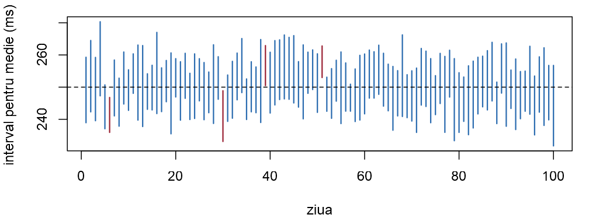
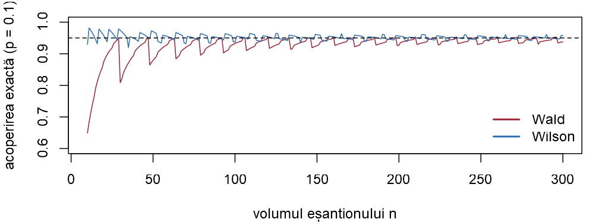

x <- c(251, 238, 262, 247, 255, 243, 270, 236, 249, 258, 244, 265,
252, 241, 263) # timpii de la (b), în ms
ic_medie <- function(x, nivel = 0.95, sigma = NULL) {
n <- length(x); alpha <- 1 - nivel
if (is.null(sigma)) { # sigma necunoscut: Student
q <- qt(1 - alpha / 2, n - 1); es <- sd(x) / sqrt(n)
} else { # sigma cunoscut: intervalul z
q <- qnorm(1 - alpha / 2); es <- sigma / sqrt(n)
}
c(inf = mean(x) - q * es, sup = mean(x) + q * es)
}Seminarul 12. Intervale de încredere
Probabilități și Statistică · Seminarul 12 (seminar și laborator)
Alexandru Amărioarei
Universitatea din București · Facultatea de Matematică și Informatică · 2026–2027
Planul seminarului și laboratorului
Un interval de încredere (Cursul 12) însoțește estimația cu o marjă de eroare și cu o garanție: procedura care l-a produs „prinde” valoarea adevărată în \(95\%\) din cazuri.
- Breviar: rezultatele din Cursul 12 și instrumentele R ale ședinței.
- Intervale pentru medie și nivelul de încredere: intervalul \(z\) și intervalul Student, acoperirea, prin simulare, lățimea intervalului.
- Intervale pentru varianță și pentru două eșantioane: abaterea standard, intrări independente, date pereche.
- Intervale asimptotice: intervalul Wald și acoperirea lui reală, un test A/B, verosimilitatea maximă.
- Intervale bootstrap: intervalul bootstrap percentilă, un interval pentru mediană.
Fiecare exercițiu: Seminar rezolvarea matematică, apoi Laborator rezolvarea în R.
Obiective
La sfârșitul ședinței studentul trebuie să poată:
- calcula și interpreta corect un interval de încredere pentru medie (cu \(\sigma\) cunoscut și cu \(\sigma\) necunoscut) și explica nivelul de încredere prin probabilitatea de acoperire;
- descrie cum depinde lățimea intervalului de volumul eșantionului, de nivel și de variabilitatea datelor și determina volumul necesar pentru o marjă de eroare dată;
- construi intervale pentru varianță și pentru diferența a două medii și alege corect între varianta cu dispersii egale, varianta Welch și cea pentru date pereche;
- construi intervale asimptotice pentru o proporție, pentru diferența a două proporții și pentru un parametru estimat prin verosimilitate maximă, cunoscând limitele acestor aproximări;
- construi un interval bootstrap pentru o statistică fără pivot simplu (mediana, media trunchiată);
- folosi în R
qnorm,qt,qchisq,qf,t.test,var.test,prop.test,binom.testși estima sau calcula exact probabilitatea de acoperire a unui interval.
Breviar: intervalul de încredere și media
Breviar
- Interval de încredere de nivel \(1-\alpha\) (Definiția 1 din Cursul 12): un interval aleator \([L,U]\), calculat din eșantion, cu \(\PP_\theta(L\le\theta\le U)\ge1-\alpha\) pentru orice \(\theta\). Aleatoare sunt capetele, nu parametrul; nivelul este o proprietate a procedurii. \(\PP_\theta(L\le\theta\le U)\) este probabilitatea de acoperire.
- Pivot (Definiția 2 din Cursul 12): funcție de eșantion și de parametru, cu repartiție cunoscută.
- Media unei populații normale, cu \(\sigma\) cunoscut (Teorema 4 din Cursul 12), respectiv necunoscut (Teorema 5 din Cursul 12): \[\Xbar\pm z_{1-\alpha/2}\frac{\sigma}{\sqrt n},\qquad\qquad \Xbar\pm t_{n-1;1-\alpha/2}\frac{S_n}{\sqrt n}.\]
- Pivoții (Teorema 23 din Cursul 8): \(\frac{\Xbar-\mu}{S_n/\sqrt n}\sim\Stud{n-1}\) și \(\frac{(n-1)S_n^2}{\sigma^2}\sim\chisq{n-1}\).
- Margini unilaterale (Definiția 13 din Cursul 12): toată probabilitatea \(\alpha\) într-o singură coadă, de exemplu \(\mu\ge\Xbar-t_{n-1;1-\alpha}\,S_n/\sqrt n\).
Breviar: varianța și două eșantioane
Breviar (continuare)
- Varianța (Teorema 6 din Cursul 12); pentru \(\sigma\) se extrage radicalul din capete: \[\sigma^2\in\bigg[\frac{(n-1)S_n^2}{\chi^2_{n-1;1-\alpha/2}},\ \frac{(n-1)S_n^2}{\chi^2_{n-1;\alpha/2}}\bigg].\]
- Diferența a două medii, eșantioane independente de volume \(n_1\) și \(n_2\) (Secțiunea 4.4 din Cursul 12). Dacă dispersiile sunt egale (Teorema 7 din Cursul 12): \[(\bar X-\bar Y)\pm t_{n_1+n_2-2;1-\alpha/2}\,S_p\sqrt{\frac1{n_1}+\frac1{n_2}},\qquad S_p^2=\frac{(n_1-1)S_1^2+(n_2-1)S_2^2}{n_1+n_2-2}.\]
- Dispersii oarecare (metoda lui Welch): eroarea standard a diferenței este \(\sqrt{S_1^2/n_1+S_2^2/n_2}\), iar cuantila este \(t_{\nu;1-\alpha/2}\), cu numărul de grade de libertate \(\nu\) calculat din date.
- Date pereche: intervalul Student pentru diferențele \(D_i=X_i-Y_i\) (Exercițiul 5 din Cursul 12).
Breviar: intervale asimptotice și bootstrap
Breviar (continuare)
- Media unei populații oarecare, \(n\) mare (Teorema 9 din Cursul 12): \(\Xbar\pm z_{1-\alpha/2}\,S_n/\sqrt n\).
- Proporția: intervalul Wald (Definiția 10 din Cursul 12) și intervalul Wilson, cu \(z=z_{1-\alpha/2}\): \[\hat p\pm z\sqrt{\frac{\hat p(1-\hat p)}{n}},\qquad\qquad \frac{\hat p+\frac{z^2}{2n}\pm z\sqrt{\frac{\hat p(1-\hat p)}{n}+\frac{z^2}{4n^2}}}{1+\frac{z^2}{n}} .\]
- Diferența a două proporții: \((\hat p_1-\hat p_2)\pm z\sqrt{\hat p_1(1-\hat p_1)/n_1+\hat p_2(1-\hat p_2)/n_2}\).
- Verosimilitate maximă (Teorema 8 din Cursul 10; \(I(\theta)\) este informația Fisher a unei observații): \(\hth_n\pm z/\sqrt{n\,I(\hth_n)}\).
- Intervalul bootstrap percentilă (Cursul 12; Definiția 12 din Cursul 8): între cuantilele de ordin \(\alpha/2\) și \(1-\alpha/2\) ale valorilor \(T_1^*,\dots,T_B^*\) ale statisticii pe \(B\) eșantioane bootstrap.
Breviar: instrumentele R ale ședinței
Instrumente R folosite azi
- cuantile:
qnorm(0.975),qt(0.975, n - 1),qchisq(c(0.025, 0.975), n - 1),qf; t.test(x)$conf.int— Student;t.test(x, y)— Welch;var.equal = TRUE— dispersii egale;paired = TRUE— pereche;alternative = "greater"— margine inferioară;var.test(x, y)$conf.int— raportul a două dispersii (Propoziția 8 din Cursul 12);prop.test(k, n, correct = FALSE)$conf.int— Wilson sau două proporții;binom.test(k, n)$conf.int— „exact”;- acoperirea prin simulare: câte un eșantion pe fiecare linie a unei matrice (ca în Seminarul 7), apoi
mean(inf <= mu & mu <= sup);replicate(B, expr); - acoperirea exactă (date discrete): suma probabilităților
dbinom(k, n, p)ale valorilork„bune”; plot(NULL, xlim, ylim),segments(x0, y0, x1, y1)— desenarea intervalelor;- bootstrap:
sample(x, replace = TRUE),quantile(tb, c(0.025, 0.975));mean(x, trim = 0.1),sort(x)[j].
Intervale pentru medie și nivelul de încredere
Timpul mediu de răspuns: intervalul z și intervalul Student
Exercițiul 1 (Timpul mediu de răspuns: intervalul z și intervalul Student)
Timpul de răspuns (în milisecunde) al unui serviciu web la o cerere este modelat printr-o variabilă aleatoare \(\Norm(\mu,\sigma^2)\); cererile sunt independente.
- Din monitorizarea de lungă durată se știe că \(\sigma=12\) ms. Pentru \(n=36\) de cereri alese la întâmplare s-a obținut media \(\xbar=248.6\) ms. Determinați un interval de încredere de nivel \(0.95\) pentru \(\mu\).
- După o actualizare a serviciului nu mai putem presupune că \(\sigma=12\). S-au măsurat \(n=15\) cereri: 251, 238, 262, 247, 255, 243, 270, 236, 249, 258, 244, 265, 252, 241, 263, pentru care \(\sum x_i=3774\) și \(\sum x_i^2=951\,048\). Calculați \(\xbar\) și \(s\) și determinați intervalul de încredere de nivel \(0.95\) pentru \(\mu\). Este compatibilă cu datele valoarea \(\mu=250\) ms, promisă clienților?
- Ce interval s-ar obține la (b) dacă am folosi, greșit, cuantila \(z_{0.975}\) în locul cuantilei Student? Dar dacă am cere nivelul \(0.99\)?
- În R: scrieți funcția
ic_medie(x, nivel, sigma), care calculează intervalul Student sau, dacă se dăsigma, intervalul \(z\), și comparați-o cut.test.
Intervalul z și intervalul Student — rezolvare (a)
Soluție
Seminar (a) Abaterea standard este cunoscută, deci folosim pivotul \(Z=\dfrac{\Xbar-\mu}{\sigma/\sqrt n}\sim\Norm(0,1)\) și Teorema 4 din Cursul 12. Eroarea standard a mediei este \(\dfrac{\sigma}{\sqrt n}=\dfrac{12}{6}=2\) ms, iar \(z_{0.975}\approx1.96\): \[ 248.6\pm1.96\cdot2=248.6\pm3.92=[244.68,\ 252.52]\ \text{ms}. \] Numărul \(3.92\) este marja de eroare.
Interpretarea corectă: intervalul a fost obținut printr-o procedură care, repetată pe multe eșantioane de câte \(36\) de cereri, produce în \(95\%\) din cazuri un interval care îl conține pe \(\mu\) (Exercițiul 2). Nivelul \(0.95\) se referă la procedură, nu la intervalul \([244.68,\ 252.52]\): \(\mu\) nu este aleator.
Intervalul z și intervalul Student — rezolvare (b)
Soluție (continuare)
Seminar (b) Media este \(\xbar=\frac{3774}{15}=251.6\) ms. Pentru varianță folosim identitatea \(\sum(x_i-\xbar)^2=\sum x_i^2-n\,\xbar^2\) (Lema 5 din Cursul 8): \[ \begin{aligned} \sum(x_i-\xbar)^2&=951\,048-15\cdot251.6^2=951\,048-949\,538.4=1509.6,\\ s^2&=\frac{1509.6}{14}\approx107.83,\qquad s=\sqrt{107.83}\approx10.38 . \end{aligned} \] Înlocuim \(\sigma\) cu \(s\): pivotul \(\frac{\Xbar-\mu}{S_n/\sqrt n}\) are repartiția Student cu \(n-1=14\) grade de libertate (Teorema 5 din Cursul 12). Eroarea standard estimată este \(\frac{s}{\sqrt n}=\frac{10.38}{\sqrt{15}}\approx2.681\), iar \(t_{14;0.975}\approx2.145\): \[ 251.6\pm2.145\cdot2.681=251.6\pm5.75=[245.85,\ 257.35]\ \text{ms}. \] Valoarea \(250\) se află în interval: datele sunt compatibile cu timpul mediu promis.
Intervalul z și intervalul Student — rezolvare (c)
Soluție (continuare)
Seminar (c) Cu \(z_{0.975}=1.96\) am obține \[ 251.6\pm1.96\cdot2.681=251.6\pm5.25=[246.35,\ 256.85], \] un interval cu aproximativ \(9\%\) mai scurt. El pare mai precis, dar precizia este falsă: cuantila normală ignoră faptul că și \(s\) este doar o estimație, obținută din numai \(15\) valori, iar nivelul real al acestui interval este sub \(0.95\) (îl calculăm în Exercițiul 2).
Pentru nivelul \(0.99\) avem \(t_{14;0.995}\approx2.977\): \[ 251.6\pm2.977\cdot2.681=251.6\pm7.98=[243.62,\ 259.58] . \] Mai multă încredere se plătește cu un interval mai lung.
Intervalul z și intervalul Student — în R: funcția ic_medie
Soluție
Laborator (d) Funcția urmează exact formulele: cuantila (qt sau qnorm) înmulțită cu eroarea standard. Argumentul sigma = NULL înseamnă „\(\sigma\) necunoscut”.
Intervalul z și intervalul Student — în R: calculele de mână
Soluție
Laborator Regăsim \(\xbar=251.6\), \(s\approx10.38\), eroarea standard \(2.681\), \(t_{14;0.975}\approx2.145\) și intervalul de la (a); adunăm apoi într-un tabel intervalele de la (b) și (c).
c(media = mean(x), s = sd(x), es = sd(x) / sqrt(15), t = qt(0.975, 14))
print(248.6 + c(-1, 1) * qnorm(0.975) * 12 / sqrt(36), digits = 5) # (a)
tab <- rbind(Student_95 = ic_medie(x), Student_99 = ic_medie(x, 0.99),
t.test_95 = t.test(x)$conf.int,
z_gresit = mean(x) + c(-1, 1) * qnorm(0.975) * sd(x) / sqrt(15),
z_sigma_12 = ic_medie(x, sigma = 12))#> media s es t
#> 251.600 10.384 2.681 2.145
#> [1] 244.68 252.52Intervalul z și intervalul Student — în R: comparația cu t.test
Soluție
Laborator Regăsim intervalele calculate de mână; funcția noastră dă același rezultat ca t.test(x)$conf.int. Ultima linie a tabelului arată ce am obține dacă am continua să credem că \(\sigma=12\): un interval ceva mai lung decât cel Student, deoarece \(s=10.38<12\).
#> inf sup
#> Student_95 245.85 257.35
#> Student_99 243.62 259.58
#> t.test_95 245.85 257.35
#> z_gresit 246.35 256.85
#> z_sigma_12 245.53 257.67Vectorul x și funcția ic_medie vor fi folosite în exercițiile următoare.
Ce înseamnă nivelul de încredere: acoperirea, prin simulare
Exercițiul 2 (Ce înseamnă nivelul de încredere: acoperirea, prin simulare)
Timpul de răspuns din Exercițiul 1 are repartiția \(\Norm(\mu,\sigma^2)\), cu \(\mu=250\) ms și \(\sigma=12\) ms. În fiecare zi, o echipă măsoară \(n\) cereri și calculează intervalul Student de nivel \(0.95\), fără să cunoască \(\mu\) și \(\sigma\).
- Echipa calculează câte un interval în fiecare dintre \(M=100\) de zile. Ce repartiție are numărul \(R\) al intervalelor care nu îl conțin pe \(\mu\)? Calculați \(\E[R]\), abaterea standard a lui \(R\) și \(\PP(R=0)\).
- Un coleg folosește întotdeauna \(1.96\) în locul cuantilei Student: \(\Xbar\pm1.96\,S_n/\sqrt n\). Exprimați probabilitatea de acoperire a acestui interval cu funcția de repartiție Student și evaluați-o pentru \(n\in\{5,10,30,100\}\).
- În R: simulați cele \(100\) de zile pentru \(n=10\), desenați intervalele și numărați-le pe cele care nu îl conțin pe \(\mu\).
- În R: scrieți o funcție care estimează, din \(B=10^4\) eșantioane, probabilitatea de acoperire a intervalului Student și a celui de la (b), pentru \(n\in\{5,10,30,100\}\).
- În R: ce se întâmplă dacă populația nu este normală? Repetați (d) pentru timpi de răspuns exponențiali, cu aceeași medie de \(250\) ms.
Nivelul de încredere — rezolvare (a)
Soluție
Seminar (a) Pentru o populație normală intervalul Student are nivelul exact \(0.95\) (Teorema 5 din Cursul 12): în fiecare zi, probabilitatea ca intervalul să nu îl conțină pe \(\mu\) este \(0.05\). Zilele sunt independente, deci \(R\) numără „succesele” în \(100\) de încercări independente: \[ R\sim\Bin(100,0.05). \] Atunci \[ \E[R]=100\cdot0.05=5,\qquad \sigma_R=\sqrt{100\cdot0.05\cdot0.95}\approx2.18,\qquad \PP(R=0)=0.95^{100}\approx0.006 . \] Ne așteptăm deci la aproximativ \(5\) intervale „ratate” din \(100\), dar nu la exact \(5\): orice număr între \(1\) și \(9\) este obișnuit (\(\PP(1\le R\le9)\approx0.966\)).
Niciunul dintre intervalele ratate nu poate fi recunoscut privind doar datele zilei respective.
Nivelul de încredere — rezolvare (b)
Soluție (continuare)
Seminar (b) Intervalul îl conține pe \(\mu\) exact atunci când \(|\Xbar-\mu|\le1.96\,\dfrac{S_n}{\sqrt n}\), adică \(|T|\le1.96\), unde \[
T=\frac{\Xbar-\mu}{S_n/\sqrt n}\sim\Stud{n-1}\qquad\text{(teorema lui Fisher)}.
\] Notând cu \(F_{n-1}\) funcția de repartiție Student cu \(n-1\) grade de libertate (în R, pt) și folosind simetria ei, \[
\PP\big(|T|\le1.96\big)=F_{n-1}(1.96)-F_{n-1}(-1.96)=2F_{n-1}(1.96)-1 .
\] Valorile sunt \(0.878\) pentru \(n=5\), \(0.918\) pentru \(n=10\), \(0.940\) pentru \(n=30\) și \(0.947\) pentru \(n=100\).
Pentru eșantioane mici intervalul „cu \(1.96\)” promite \(95\%\) și oferă mai puțin de \(90\%\); abia pentru \(n\) de ordinul zecilor diferența devine neglijabilă, deoarece repartiția Student se apropie de cea normală.
Nivelul de încredere — în R: 100 de zile, 100 de intervale
Soluție
Laborator (c) replicate repetă de \(M\) ori simularea unei zile; segments desenează intervalele.
set.seed(1202)
mu <- 250; sigma <- 12; n <- 10; M <- 100
ic <- t(replicate(M, ic_medie(rnorm(n, mu, sigma)))) # M linii: inf, sup
rateaza <- ic[, "inf"] > mu | ic[, "sup"] < mu
c(ratari = sum(rateaza), acoperire = mean(!rateaza))
plot(NULL, xlim = c(1, M), ylim = range(ic), xlab = "ziua",
ylab = "interval pentru medie (ms)")
segments(1:M, ic[, "inf"], 1:M, ic[, "sup"], lwd = 1.5,
col = ifelse(rateaza, culori[["rosu"]], culori[["albastru"]]))
abline(h = mu, lty = 2) # valoarea adevărată#> ratari acoperire
#> 4.00 0.96Nivelul de încredere — în R: graficul celor 100 de intervale
Soluție
Laborator În această simulare \(4\) intervale din \(100\) (cele roșii) nu îl conțin pe \(\mu=250\): firesc pentru o variabilă \(\Bin(100,0.05)\). Intervalele diferă prin poziție (media \(\xbar\) a zilei) și prin lungime (abaterea standard \(s\) a zilei); linia întreruptă, valoarea adevărată, stă pe loc.

Nivelul de încredere — în R: funcția acoperire
Soluție
Laborator (d) Pentru \(B=10^4\) eșantioane lucrăm pe matrice: fiecare linie este un eșantion. var_linii calculează varianța de selecție a fiecărei linii (o vom refolosi), iar acoperire primește un generator rgen (o funcție care întoarce m valori simulate) și media adevărată mu. Ea întoarce și proporția intervalelor Student aflate în întregime sub \(\mu\), respectiv peste \(\mu\).
var_linii <- function(X) rowSums((X - rowMeans(X))^2) / (ncol(X) - 1)
acoperire <- function(n, rgen, mu, B = 1e4) {
X <- matrix(rgen(n * B), B) # B eșantioane de volum n
m <- rowMeans(X); es <- sqrt(var_linii(X) / n)
et <- qt(0.975, n - 1) * es # marja intervalului Student
ez <- qnorm(0.975) * es # marja „cu 1.96”
c(n = n, Student = mean(abs(m - mu) <= et), cu_z = mean(abs(m - mu) <= ez),
sub_mu = mean(m + et < mu), peste_mu = mean(m - et > mu))
}Nivelul de încredere — în R: populația normală
Soluție
Laborator Intervalul Student: acoperire \(0.95\) pentru orice \(n\), în limita erorii de simulare (\(\approx0.004\)), cu ratările împărțite egal sub și peste \(\mu\). Intervalul „cu \(1.96\)”: valorile de la (b).
#> n Student cu_z sub_mu peste_mu
#> [1,] 5 0.9493 0.8760 0.0245 0.0262
#> [2,] 10 0.9489 0.9199 0.0246 0.0265
#> [3,] 30 0.9495 0.9385 0.0259 0.0246
#> [4,] 100 0.9498 0.9470 0.0228 0.0274
#> [1] 0.8784 0.9184 0.9403 0.9472Nivelul de încredere — în R: populația exponențială
Soluție
Laborator (e) Cu generatorul rexp(m, 1 / 250), intervalul Student de nivel „\(0.95\)” acoperă doar în \(\approx0.88\) (\(n=5\)), \(0.90\) (\(n=10\)), \(0.93\) (\(n=30\)) din cazuri; abia pentru \(n=100\) se apropie de \(0.95\). Aproape toate ratările sunt de același fel: intervalul se află în întregime sub \(\mu\) — un eșantion mic dintr-o repartiție cu coadă lungă la dreapta nu conține, de multe ori, nicio valoare mare, iar atunci \(\xbar\) și \(s\) sunt prea mici. TLC repară situația, dar încet: pe un eșantion mic, ne uităm întâi la date.
De ce depinde lățimea intervalului și câte măsurători sunt necesare
Exercițiul 3 (De ce depinde lățimea intervalului și câte măsurători sunt necesare)
Marja de eroare a intervalului Student este \(E=t_{n-1;1-\alpha/2}\,\dfrac{s}{\sqrt n}\). Pornim de la datele din Exercițiul 1 (b): \(n=15\) și \(s=10.38\) ms.
- Calculați marja de eroare pentru nivelurile \(0.90\), \(0.95\) și \(0.99\). Cum se modifică marja, aproximativ, dacă volumul eșantionului crește de \(4\) ori? Dar dacă \(s\) se dublează?
- Echipa dorește un interval de nivel \(0.95\) cu marja de cel mult \(E_0=2\) ms. Folosind \(s=10.38\) ca estimație preliminară („pilot”) pentru \(\sigma\), determinați volumul necesar cu formula din Secțiunea 7 din Cursul 12. Ce se schimbă dacă ținem seama că intervalul va fi calculat cu cuantila Student?
- După ce \(n\) a fost fixat, marja efectivă depinde de abaterea standard \(S_n\) a noului eșantion, deci este aleatoare. Presupunând că \(\sigma=10.38\), exprimați \(\PP(E\le2)\) cu ajutorul repartiției \(\chi^2\).
- În R: construiți tabelul marjelor pentru \(n\in\{15,60,240\}\) și cele trei niveluri; scrieți funcția
n_medie(E0, s, nivel); calculați probabilitatea de la (c), verificați-o prin simulare și găsiți volumul pentru care \(\PP(E\le2)\ge0.9\).
Lățimea intervalului — rezolvare (a), (b)
Soluție
Seminar (a) Eroarea standard este \(\frac{s}{\sqrt n}=2.681\), iar \(t_{14;0.95}\approx1.761\), \(t_{14;0.975}\approx2.145\), \(t_{14;0.995}\approx2.977\): \[ E_{0.90}=1.761\cdot2.681\approx4.72,\qquad E_{0.95}\approx5.75,\qquad E_{0.99}=2.977\cdot2.681\approx7.98\ \text{ms}. \] De la \(95\%\) la \(99\%\) intervalul se lungește cu aproape \(40\%\). Dacă \(n\) crește de \(4\) ori, marja se înjumătățește (chiar puțin mai mult: scade și cuantila Student); dacă \(s\) se dublează, marja se dublează. Marja este proporțională cu \(s\) și cu \(\frac{1}{\sqrt n}\) și crește odată cu nivelul de încredere.
(b) Din condiția \(z_{0.975}\frac{\sigma}{\sqrt n}\le E_0\), cu \(\sigma\approx10.38\): \[ n\ge\Big(\frac{z_{0.975}\,\sigma}{E_0}\Big)^2=\Big(\frac{1.96\cdot10.38}{2}\Big)^2\approx10.17^2\approx103.5,\qquad\text{deci } n=104 . \]
Lățimea intervalului — rezolvare (b), (c)
Soluție (continuare)
Seminar Cu cuantila Student: pentru \(n=104\), \(t_{103;0.975}\approx1.983\) și marja ar fi \(1.983\cdot\frac{10.38}{\sqrt{104}}\approx2.02>2\); mărind \(n\) până când \(t_{n-1;0.975}\frac{s}{\sqrt n}\le2\), obținem \(n=106\) (în R).
(c) \(E\le2\) exact atunci când \(S_n\le\frac{2\sqrt n}{t}\), unde \(t=t_{n-1;0.975}\). Ridicăm la pătrat și înmulțim cu \(\frac{n-1}{\sigma^2}\), pentru a face să apară \(V=\frac{(n-1)S_n^2}{\sigma^2}\sim\chisq{n-1}\) (Teorema 23 din Cursul 8): \[ \PP(E\le2)=\PP\Big(S_n^2\le\frac{4n}{t^2}\Big)=\PP\Big(V\le\frac{4n(n-1)}{t^2\sigma^2}\Big). \] Pentru \(n=106\) și \(\sigma^2=107.83\) pragul este \(\frac{4\cdot106\cdot105}{1.983^2\cdot107.83}\approx105.0\), aproape egal cu media \(105\) a repartiției \(\chisq{105}\), deci probabilitatea este aproximativ \(\frac12\) (exact: \(0.52\)).
Formula de la (b) garantează marja dorită doar „în medie”: cam în jumătate din cazuri noul eșantion va avea \(s>10.38\) și marja va depăși \(2\) ms.
Lățimea intervalului — în R: tabelul marjelor
Soluție
Laborator (d) outer(a, b, f) calculează f pentru toate perechile de valori. Prima linie a tabelului: marjele de la (a); pe coloane, de la \(n=15\) la \(60\) și la \(240\), marja se reduce de fiecare dată la mai puțin de jumătate.
#> nivel
#> n 0.9 0.95 0.99
#> 15 4.72 5.75 7.98
#> 60 2.24 2.68 3.57
#> 240 1.11 1.32 1.74Lățimea intervalului — în R: funcția n_medie
Soluție
Laborator Funcția n_medie întoarce volumul dat de formula cu \(z\) și cel mai mic \(n\) care îndeplinește condiția cu cuantila Student. Volumele necesare sunt \(104\) (cu \(z\)) și \(106\) (cu cuantila Student), ca la (b).
Lățimea intervalului — în R: cât de des este respectată marja
Soluție
Laborator p_marja este formula de la (c); simularea o confirmă: marja medie este \(2\) ms, dar numai \(\approx52\%\) dintre eșantioane au marja sub \(2\) ms. Pentru \(\PP(E\le2)\ge0.9\): min(n[p_marja(n) >= 0.9]), cu n <- 100:200, dă \(n=124\) (o rezervă de \(\approx17\%\)).
p_marja <- function(n, E0 = 2, sigma = s) { # P(E <= E0), punctul (c)
pchisq(E0^2 * n * (n - 1) / (qt(0.975, n - 1)^2 * sigma^2), n - 1)
}
set.seed(1205)
X <- matrix(rnorm(106 * 1e4, 250, s), 1e4) # 10^4 eșantioane, n = 106
E <- qt(0.975, 105) * sqrt(var_linii(X) / 106) # marjele obținute
c(exact = p_marja(106), simulat = mean(E <= 2), marja_medie = mean(E))#> exact simulat marja_medie
#> 0.5188 0.5139 1.9976Intervale pentru varianță și pentru două eșantioane
Cât de stabil este timpul de răspuns: interval pentru abaterea standard
Exercițiul 4 (Cât de stabil este timpul de răspuns: interval pentru abaterea standard)
Reluăm cele \(n=15\) măsurători din Exercițiul 1 (b), pentru care \(s^2\approx107.83\) și \(s\approx10.38\) ms; populația este presupusă normală.
- Determinați intervale de încredere de nivel \(0.95\) pentru \(\sigma^2\) și pentru \(\sigma\). Este compatibilă cu datele valoarea \(\sigma=12\) ms, cunoscută dinaintea actualizării?
- De ce intervalul pentru \(\sigma\) nu este centrat în \(s\)?
- Se poate arăta că, pentru \(n\) mare, \(\Var(S_n^2)\approx(\kappa-1)\dfrac{\sigma^4}{n}\), unde \(\kappa=\dfrac{\E[(X-\mu)^4]}{\sigma^4}\) este coeficientul de aplatizare al populației: \(\kappa=3\) pentru repartiția normală, \(\kappa=9\) pentru cea exponențială și \(\kappa=1.8\) pentru cea uniformă. Ce consecință are acest fapt pentru intervalul de la (a) atunci când populația nu este normală?
- În R: scrieți funcția
ic_var(x, nivel)și estimați prin simulare acoperirea reală a intervalului pentru populații normale, exponențiale și uniforme cu aceeași varianță, pentru \(n=15\) și \(n=100\).
Interval pentru abaterea standard — rezolvare (a), (b)
Soluție
Seminar (a) Folosim pivotul \(\frac{(n-1)S_n^2}{\sigma^2}\sim\chisq{14}\) (Teorema 6 din Cursul 12). Avem \((n-1)s^2=1509.6\), iar cuantilele sunt \(\chi^2_{14;0.025}\approx5.629\) și \(\chi^2_{14;0.975}\approx26.119\). Cuantila mare apare la capătul stâng: \[ \sigma^2\in\Big[\frac{1509.6}{26.119},\ \frac{1509.6}{5.629}\Big]=[57.80,\ 268.2],\qquad \sigma\in\big[\sqrt{57.80},\ \sqrt{268.2}\,\big]=[7.60,\ 16.38]\ \text{ms}. \] Valoarea \(\sigma=12\) se află în interval: nu avem motive să credem că actualizarea a schimbat variabilitatea. Intervalul este însă foarte lung (capătul drept este de peste două ori mai mare decât cel stâng): \(15\) observații spun puțin despre variabilitate, mult mai puțin decât despre medie.
(b) Repartiția \(\chi^2\) este asimetrică (are coada lungă la dreapta), deci cele două cuantile nu sunt așezate simetric față de „centrul” \(n-1=14\): \(5.629\) este la distanța \(8.4\), iar \(26.119\) la distanța \(12.1\). După împărțire, \(s=10.38\) se află la \(2.8\) ms de capătul stâng și la \(6.0\) ms de cel drept: datele exclud mai ușor valorile mici ale lui \(\sigma\) decât pe cele mari.
Interval pentru abaterea standard — rezolvare (c)
Soluție (continuare)
Seminar (c) Pentru populația normală, \(\Var(S_n^2)=\frac{2\sigma^4}{n-1}\) (Corolarul 25 din Cursul 8), în acord cu formula din enunț pentru \(\kappa=3\). Intervalul de la (a) este construit pe această valoare.
- Populație exponențială (\(\kappa=9\)): varianța reală a lui \(S_n^2\) este de \(\frac{9-1}{3-1}=4\) ori mai mare, adică \(S_n^2\) fluctuează de \(2\) ori mai mult decât „crede” intervalul. El este prea scurt, iar acoperirea, pentru \(n\) mare, este de aproximativ \(\PP\big(|Z|\le\frac{1.96}{2}\big)=2\Phi(0.98)-1\approx0.67\) în loc de \(0.95\).
- Populație uniformă (\(\kappa=1.8\)): varianța reală este de \(\frac{0.8}{2}=0.4\) ori cea presupusă, intervalul este prea lung, iar acoperirea este de aproximativ \(2\Phi\big(\frac{1.96}{\sqrt{0.4}}\big)-1=2\Phi(3.10)-1\approx0.998\).
Esențial: aceste valori nu se îmbunătățesc când \(n\) crește. Spre deosebire de intervalul pentru medie, cel pentru varianță nu este „salvat” de Teorema Limită Centrală.
Interval pentru abaterea standard — în R: ic_var și acop_var
Soluție
Laborator (d) ic_var: formula de la (a); acop_var: acoperirea, din \(B\) eșantioane.
ic_var <- function(x, nivel = 0.95) {
n <- length(x); alpha <- 1 - nivel
(n - 1) * var(x) / qchisq(c(1 - alpha / 2, alpha / 2), n - 1)
}
rbind(varianta = ic_var(x), abatere_standard = sqrt(ic_var(x)))
acop_var <- function(n, rgen, sigma2, B = 1e4) {
v <- (n - 1) * var_linii(matrix(rgen(n * B), B)) # (n - 1) S^2
mean(v / qchisq(0.975, n - 1) <= sigma2 & sigma2 <= v / qchisq(0.025, n - 1))
}#> [,1] [,2]
#> varianta 57.797 268.20
#> abatere_standard 7.602 16.38Interval pentru abaterea standard — în R: trei populații
Soluție
Laborator Trei populații cu varianța \(144\): \(\Norm(250,12^2)\), exponențiala cu media \(12\) și uniforma pe \([0,12\sqrt{12}\,]\). Normală: \(0.95\); exponențială: doar \(0.74\) pentru \(n=15\), scăzând spre \(0.67\) de la (c); uniformă: practic \(1\). Intervalul cere date normale; altfel, o alternativă este metoda bootstrap.
#> normala exponentiala uniforma
#> n_15 0.9491 0.7419 0.9959
#> n_100 0.9534 0.6912 0.9975Doi algoritmi de sortare pe intrări independente
Exercițiul 5 (Doi algoritmi de sortare pe intrări independente)
Pentru a compara doi algoritmi de sortare, \(A\) și \(B\), s-au generat la întâmplare \(22\) de tablouri cu câte \(10^6\) elemente; algoritmul \(A\) a fost rulat pe \(10\) dintre ele, iar \(B\) pe celelalte \(12\). Timpii de rulare (în ms) au fost:
\(A\): 91.3, 97.2, 88.4, 94.6, 99.1, 86.5, 92.8, 95.7, 89.9, 93.5;
\(B\): 84.2, 90.6, 79.8, 88.1, 93.4, 82.7, 86.9, 77.5, 91.2, 87.3, 80.4, 89.9,
cu \(\bar x_A=92.9\), \(s_A^2\approx15.64\) și \(\bar x_B=86.0\), \(s_B^2\approx25.57\). Timpii sunt presupuși normali.
- Presupunând că cele două populații au aceeași dispersie, determinați un interval de încredere de nivel \(0.95\) pentru \(\mu_A-\mu_B\). Ce concluzie trageți?
- Formula de la (a) presupune \(\sigma_A=\sigma_B\). Caz extrem: \(n_1=6\) observații cu \(\sigma_1=15\) și \(n_2=24\) cu \(\sigma_2=5\). Comparați abaterea standard reală a lui \(\bar X-\bar Y\) cu cea pe care o „vede” formula cu dispersie comună.
- În R: calculați intervalul de la (a) cu
t.testși comparați-l cu intervalul Welch. - În R: estimați prin simulare acoperirea celor două intervale când dispersiile sunt egale; când eșantionul mic, respectiv cel mare, are dispersia mare; la volume egale.
Doi algoritmi de sortare — rezolvare (a)
Soluție
Seminar (a) Cele două eșantioane sunt independente (tablouri diferite), deci aplicăm Teorema 7 din Cursul 12. Varianța comună este media ponderată a celor două varianțe de selecție, cu ponderile \(n_1-1=9\) și \(n_2-1=11\): \[ s_p^2=\frac{9\cdot15.64+11\cdot25.57}{20}=\frac{140.8+281.3}{20}\approx21.10,\qquad s_p\approx4.594 . \] Eroarea standard a diferenței este \(s_p\sqrt{\frac1{10}+\frac1{12}}=4.594\cdot0.4282\approx1.967\), iar \(t_{20;0.975}\approx2.086\): \[ \mu_A-\mu_B\in(92.9-86.0)\pm2.086\cdot1.967=6.9\pm4.10=[2.80,\ 11.00]\ \text{ms}. \] Intervalul conține numai valori pozitive: datele arată că algoritmul \(B\) este, în medie, mai rapid — cu o diferență între aproximativ \(3\) și \(11\) ms. Dacă intervalul ar fi conținut valoarea \(0\), nu am fi putut spune care algoritm este mai rapid (legătura dintre intervale și teste: Seminarul 13).
Doi algoritmi de sortare — rezolvare (b)
Soluție (continuare)
Seminar (b) Varianța reală a diferenței mediilor este suma varianțelor celor două medii (eșantioane independente, Teorema 26 din Cursul 8): \[ \Var(\bar X-\bar Y)=\frac{\sigma_1^2}{n_1}+\frac{\sigma_2^2}{n_2}=\frac{225}{6}+\frac{25}{24}\approx37.5+1.04=38.54,\qquad\text{abaterea standard}\approx6.21 . \] Formula cu dispersie comună estimează, în medie, varianța ponderată \(\frac{5\cdot225+23\cdot25}{28}\approx60.7\), dominată de eșantionul mare (care are dispersia mică), și o înmulțește cu \(\frac16+\frac1{24}\approx0.208\): obține \(12.65\), adică o abatere standard de \(3.56\).
Intervalul este deci de aproximativ \(\frac{6.21}{3.56}\approx1.75\) ori prea scurt, iar acoperirea lui va fi mult sub \(0.95\). Dacă schimbăm rolurile (\(n_1=24\), \(n_2=6\)), același calcul arată că intervalul devine de \(1.7\) ori prea lung.
Metoda lui Welch folosește direct \(\frac{s_1^2}{n_1}+\frac{s_2^2}{n_2}\) și nu are această problemă.
Doi algoritmi de sortare — în R: datele și varianța comună
Soluție
Laborator (c) Regăsim varianțele de selecție și \(s_p\approx4.594\) de la (a); t.test(a, b)$parameter este numărul de grade de libertate \(\nu\) folosit de metoda lui Welch.
a <- c(91.3, 97.2, 88.4, 94.6, 99.1, 86.5, 92.8, 95.7, 89.9, 93.5)
b <- c(84.2, 90.6, 79.8, 88.1, 93.4, 82.7, 86.9, 77.5, 91.2, 87.3,
80.4, 89.9)
sp <- sqrt((9 * var(a) + 11 * var(b)) / 20) # s_p
c(var_A = var(a), var_B = var(b), s_p = sp,
gl_Welch = unname(t.test(a, b)$parameter)) # grade de libertate#> var_A var_B s_p gl_Welch
#> 15.644 25.569 4.594 19.943Doi algoritmi de sortare — în R: t.test și intervalul Welch
Soluție
Laborator Argumentul var.equal = TRUE cere varianta cu dispersie comună; fără el, t.test aplică metoda lui Welch. Intervalul calculat de mână coincide cu cel dat de t.test(..., var.equal = TRUE). Intervalul Welch, \([2.89,10.91]\), cu \(\nu\approx19.9\) grade de libertate, este aproape identic: varianțele de selecție sunt apropiate, iar volumele aproape egale.
Doi algoritmi de sortare — în R: funcția acop_doua
Soluție
Laborator (d) acop_doua simulează \(B\) perechi de eșantioane normale cu aceeași medie (diferența adevărată este \(0\)) și calculează, pentru fiecare, marjele celor două intervale: e_c (dispersie comună) și e_w (Welch).
acop_doua <- function(n1, n2, s1, s2, B = 1e4) {
X <- matrix(rnorm(n1 * B, 0, s1), B); Y <- matrix(rnorm(n2 * B, 0, s2), B)
d <- rowMeans(X) - rowMeans(Y) # diferența adevărată este 0
v1 <- var_linii(X); v2 <- var_linii(Y)
sp2 <- ((n1 - 1) * v1 + (n2 - 1) * v2) / (n1 + n2 - 2)
e_c <- qt(0.975, n1 + n2 - 2) * sqrt(sp2 * (1 / n1 + 1 / n2))
w <- v1 / n1 + v2 / n2 # varianța estimată (Welch)
nu <- w^2 / ((v1 / n1)^2 / (n1 - 1) + (v2 / n2)^2 / (n2 - 1))
e_w <- qt(0.975, nu) * sqrt(w)
c(comuna = mean(abs(d) <= e_c), Welch = mean(abs(d) <= e_w),
lung_comuna = mean(2 * e_c), lung_Welch = mean(2 * e_w))
}Doi algoritmi de sortare — în R: acoperirea în patru situații
Soluție
Laborator Dispersii egale: ambele intervale acoperă \(0.95\). Eșantionul mic cu dispersia mare: intervalul cu dispersie comună acoperă doar \(\approx75\%\) (este de două ori prea scurt); invers, este mult prea lung. Welch își păstrează nivelul peste tot.
#> comuna Welch lung_comuna lung_Welch
#> dispersii_egale 0.951 0.953 8.83 8.899
#> mic_cu_disp_mare 0.746 0.949 14.31 30.065
#> mare_cu_disp_mare 0.998 0.951 25.47 15.082
#> volume_egale 0.945 0.953 18.62 19.327Aceleași intrări pentru ambii algoritmi: date pereche
Exercițiul 6 (Aceleași intrări pentru ambii algoritmi: date pereche)
Doi algoritmi de compresie, \(A\) și \(B\), rulați pe aceleași \(n=10\) fișiere, de dimensiuni foarte diferite; timpii (în ms): \[ \begin{array}{l|rrrrrrrrrr} \text{fișierul} & 1 & 2 & 3 & 4 & 5 & 6 & 7 & 8 & 9 & 10\\\hline A & 52 & 118 & 87 & 240 & 163 & 71 & 305 & 136 & 198 & 94\\ B & 48 & 109 & 85 & 221 & 150 & 69 & 281 & 128 & 183 & 90 \end{array} \]
- Determinați un interval de încredere de nivel \(0.95\) pentru \(\mu_A-\mu_B\), ținând seama că datele sunt pereche.
- Ce interval s-ar obține dacă am trata, greșit, cele două linii ca eșantioane independente (se dau \(s_A\approx80.72\) și \(s_B\approx73.33\))? Explicați diferența cu ajutorul formulei pentru varianța unei diferențe.
- În R: calculați ambele intervale cu
t.testși coeficientul de corelație dintre cele două linii. - În R: simulați experimentul de \(10^4\) ori; comparați acoperirea și lungimea celor două intervale.
Date pereche — rezolvare (a)
Soluție
Seminar (a) Cei doi timpi măsurați pe același fișier nu sunt independenți (un fișier mare cere mult timp ambilor algoritmi), deci formulele pentru două eșantioane independente nu se aplică. Lucrăm cu diferențele \(d_i=a_i-b_i\), care formează un singur eșantion (Exercițiul 5 din Cursul 12): \[ d:\quad 4,\ 9,\ 2,\ 19,\ 13,\ 2,\ 24,\ 8,\ 15,\ 4,\qquad \sum d_i=100,\quad \sum d_i^2=1516 . \] Atunci \(\bar d=10\), \(s_d^2=\frac{1516-10\cdot10^2}{9}=\frac{516}{9}\approx57.33\), \(s_d\approx7.572\), iar eroarea standard este \(\frac{7.572}{\sqrt{10}}\approx2.394\). Cu \(t_{9;0.975}\approx2.262\) (Teorema 5 din Cursul 12, aplicată diferențelor, presupuse normale): \[ \mu_A-\mu_B\in10\pm2.262\cdot2.394=10\pm5.42=[4.58,\ 15.42]\ \text{ms}. \] Intervalul nu conține pe \(0\): algoritmul \(B\) este mai rapid, în medie cu \(5\) până la \(15\) ms pe fișier.
Date pereche — rezolvare (b)
Soluție (continuare)
Seminar (b) Cu formula din Exercițiul 5 (a), pentru \(n_1=n_2=10\): \[ s_p^2=\frac{80.72^2+73.33^2}{2}\approx5946,\qquad s_p\approx77.1,\qquad s_p\sqrt{\tfrac2{10}}\approx34.5,\qquad t_{18;0.975}\approx2.101, \] \[ (146.4-136.4)\pm2.101\cdot34.5=10\pm72.5=[-62.5,\ 82.5]\ \text{ms}. \] Același set de date, aceeași estimație punctuală (\(10\) ms), dar un interval de \(13\) ori mai lung, care conține pe \(0\) și nu permite nicio concluzie.
Date pereche — rezolvare (b): de unde vine diferența
Soluție (continuare)
Seminar Pentru două variabile oarecare, \[ \Var(A-B)=\Var(A)+\Var(B)-2\,\Cov(A,B). \]
- Formula pentru eșantioane independente presupune \(\Cov(A,B)=0\) și adună cele două varianțe, care sunt uriașe pentru că fișierele sunt foarte diferite între ele.
- În realitate \(A\) și \(B\) sunt puternic corelate pozitiv, iar termenul \(-2\,\Cov(A,B)\) anulează aproape toată această variabilitate dintre fișiere: pe datele noastre, \(s_A^2+s_B^2\approx11\,893\), pe când \(s_d^2\approx57\).
Împerecherea elimină o sursă de variabilitate care nu are legătură cu întrebarea pusă.
Date pereche — în R: t.test(..., paired = TRUE)
Soluție
Laborator (c) paired = TRUE: analiza pe diferențe, adică intervalul Student al diferențelor.
A <- c(52, 118, 87, 240, 163, 71, 305, 136, 198, 94)
Bt <- c(48, 109, 85, 221, 150, 69, 281, 128, 183, 90)
rbind(pereche = t.test(A, Bt, paired = TRUE)$conf.int, pe_diferente = ic_medie(A - Bt),
independente = t.test(A, Bt, var.equal = TRUE)$conf.int)
c(corelatie = cor(A, Bt), var_dif = var(A - Bt),
formula = var(A) + var(Bt) - 2 * cov(A, Bt))#> inf sup
#> pereche 4.583 15.42
#> pe_diferente 4.583 15.42
#> independente -62.452 82.45
#> corelatie var_dif formula
#> 0.9998 57.3333 57.3333Date pereche — în R: simularea experimentului
Soluție
Laborator La (c): corelația dintre cele două linii este aproape \(1\), iar formula varianței diferenței se verifică și pe varianțele de selecție. (d) Fiecare fișier are o „dificultate” \(G\) (cel puțin \(20\) ms, în medie \(150\) ms, cu o repartiție asimetrică), iar timpii celor doi algoritmi sunt \(G\) plus un zgomot normal cu abaterea standard \(5\) ms; \(B\) este mai rapid cu \(\delta=10\) ms.
set.seed(1208)
n <- 10; B <- 1e4; delta <- 10
G <- matrix(20 + rexp(n * B, 1 / 130), B) # dificultatea fișierelor
TA <- G + rnorm(n * B, 0, 5) # timpii lui A
TB <- G - delta + rnorm(n * B, 0, 5) # timpii lui B
d <- rowMeans(TA - TB)
e_per <- qt(0.975, n - 1) * sqrt(var_linii(TA - TB) / n)
e_ind <- qt(0.975, 2 * n - 2) * sqrt((var_linii(TA) + var_linii(TB)) / n)Date pereche — în R: acoperirea și lungimea celor două intervale
Soluție
Laborator Intervalul pereche are acoperirea \(0.95\) și lungimea medie de aproximativ \(10\) ms; în \(98\%\) din experimente exclude valoarea \(0\), adică detectează că \(B\) este mai rapid. Intervalul pentru eșantioane independente îl conține întotdeauna pe \(\delta\) (acoperire \(1\), nu \(0.95\): formula nu se potrivește cu felul în care au fost obținute datele), dar este de peste \(20\) de ori mai lung și nu exclude niciodată valoarea \(0\). Regula practică: aceleași intrări, aceeași mașină, analiză pe diferențe.
#> acoperire lungime exclude_0
#> pereche 0.9488 9.857 0.9763
#> independente 1.0000 224.162 0.0000Intervale asimptotice
Rata de eroare a unui serviciu: intervalul Wald și acoperirea lui reală
Exercițiul 7 (Rata de eroare a unui serviciu: intervalul Wald și acoperirea lui reală)
Un serviciu web răspunde uneori cu o eroare. Presupunem că cererile sunt independente și că fiecare eșuează cu aceeași probabilitate necunoscută \(p\) (rata de eroare).
- Din \(n=200\) de cereri, \(14\) au eșuat. Determinați intervalul Wald de nivel \(0.95\) pentru \(p\).
- Un test rapid, cu \(n=30\) de cereri, a produs o singură eroare. Calculați intervalul Wald. Ce interval s-ar fi obținut dacă nu apărea nicio eroare? Comentați.
- Presupunem că \(p=0.1\) și \(n=30\). Pentru ce valori ale numărului de erori \(K\) intervalul Wald îl conține pe \(p\)? Calculați probabilitatea de acoperire reală a intervalului.
- Câte cereri trebuie monitorizate pentru ca marja de eroare să fie de cel mult \(0.01\), la nivelul \(0.95\)? Răspundeți folosind \(\hat p=0.07\) ca estimație preliminară și apoi fără nicio informație despre \(p\).
- În R: scrieți funcțiile
ic_wald(k, n)șiic_wilson(k, n)și comparați, pe datele de la (a) și (b), intervalele Wald, Wilson (prop.test) și cel „exact” (binom.test). - În R: scrieți o funcție care calculează exact, cu
dbinom, probabilitatea de acoperire; verificați (c) și reprezentați acoperirea intervalelor Wald și Wilson în funcție de \(n\), pentru \(p=0.1\).
Intervalul Wald — rezolvare (a), (b)
Soluție
Seminar Modelul. Numărul de erori din \(n\) cereri este \(K\sim\Bin(n,p)\), iar estimatorul lui \(p\) este proporția \(\hat p=\frac Kn\), cu eroarea standard estimată \(\sqrt{\hat p(1-\hat p)/n}\) (Definiția 10 din Cursul 12).
(a) \(\hat p=\frac{14}{200}=0.07\) și \(\sqrt{\frac{0.07\cdot0.93}{200}}\approx0.0180\), deci \[ p\in0.07\pm1.96\cdot0.0180=0.07\pm0.035=[0.035,\ 0.105]. \] Rata de eroare este, cu încrederea \(95\%\), între \(3.5\%\) și \(10.5\%\). Condiția de aplicare \(n\hat p\ge10\) este îndeplinită (\(n\hat p=14\)).
(b) \(\hat p=\frac1{30}\approx0.0333\) și \(\sqrt{\frac{0.0333\cdot0.9667}{30}}\approx0.0328\), deci intervalul este \(0.0333\pm1.96\cdot0.0328=[-0.031,\ 0.098]\). Capătul stâng este negativ — o valoare imposibilă pentru o probabilitate; semnalul de alarmă era vizibil: \(n\hat p=1\), mult sub \(10\). Fără nicio eroare, \(\hat p=0\), eroarea standard estimată ar fi \(0\), iar intervalul s-ar reduce la punctul \(\{0\}\): după numai \(30\) de cereri am fi „siguri” că serviciul nu greșește niciodată.
Intervalul Wald — rezolvare (c)
Soluție (continuare)
Seminar (c) Intervalul depinde de date doar prin \(K\), deci îl calculăm pentru fiecare valoare posibilă \(k\) (cu \(\hat p=\frac k{30}\)): \[ \begin{array}{c|cccc} k & 0 & 1 & 2 & 3\\ \text{interval} & \{0\} & [-0.031,\ 0.098] & [-0.023,\ 0.156] & [-0.007,\ 0.207]\\\hline k & 4 & 5 & 6 & 7\\ \text{interval} & [0.012,\ 0.255] & [0.033,\ 0.300] & [0.057,\ 0.343] & [0.082,\ 0.385] \end{array} \] iar pentru \(k=8\) intervalul este \([0.108,\ 0.425]\). Valoarea \(p=0.1\) se află în interval numai pentru \(k\in\{2,3,\dots,7\}\): pentru \(k=0\) intervalul este \(\{0\}\), pentru \(k=1\) capătul drept, \(0.098\), rămâne puțin sub \(0.1\), iar pentru \(k\ge8\) capătul stâng depășește \(0.1\). Cu \(K\sim\Bin(30,0.1)\), \[ \PP(2\le K\le7)=0.2277+0.2361+0.1771+0.1023+0.0474+0.0180\approx0.809 . \]
Intervalul Wald — rezolvare (c), (d)
Soluție (continuare)
Seminar Intervalul de nivel „\(0.95\)” îl conține pe \(p\) doar în \(81\%\) din cazuri. Vinovate sunt valorile mici ale lui \(K\): \(\PP(K=0)\approx0.042\) și \(\PP(K=1)\approx0.141\). Când apar puține erori, \(\hat p\) îl subestimează pe \(p\) și, în același timp, eroarea standard estimată este prea mică.
(d) Din condiția \(z_{0.975}\sqrt{p(1-p)/n}\le E\) (Secțiunea 7 din Cursul 12), cu \(E=0.01\) și \(p\approx0.07\): \[ n\ge\frac{1.96^2\cdot0.07\cdot0.93}{0.01^2}\approx\frac{3.8415\cdot0.0651}{0.0001}\approx2500.8,\qquad\text{deci } n=2501 . \] Fără nicio informație folosim cazul cel mai defavorabil, \(p(1-p)\le\frac14\): \(n\ge\frac{1.96^2}{4\cdot0.01^2}\approx9604\) (aceeași formulă ca în Exercițiul 3 din Seminarul 7). Informația că rata de eroare este mică reduce volumul necesar de aproape patru ori.
Intervalul Wald — în R: funcțiile ic_wald și ic_wilson
Soluție
Laborator (e) Scriem funcțiile astfel încât k și n să poată fi vectori; ele întorc o matrice cu coloanele inf și sup. Formula intervalului Wilson este cea din breviar.
ic_wald <- function(k, n, nivel = 0.95) {
z <- qnorm(1 - (1 - nivel) / 2); p <- k / n
e <- z * sqrt(p * (1 - p) / n)
cbind(inf = p - e, sup = p + e)
}
ic_wilson <- function(k, n, nivel = 0.95) {
z <- qnorm(1 - (1 - nivel) / 2); p <- k / n
centru <- (p + z^2 / (2 * n)) / (1 + z^2 / n)
e <- z * sqrt(p * (1 - p) / n + z^2 / (4 * n^2)) / (1 + z^2 / n)
cbind(inf = centru - e, sup = centru + e)
}Intervalul Wald — în R: Wald, Wilson și intervalul exact
Soluție
Laborator mapply aplică binom.test fiecărei perechi. Pentru \(14\) din \(200\) cele trei intervale sunt apropiate; pentru \(n=30\), unde Wald dă un capăt negativ sau un punct, celelalte două rămân rezonabile. prop.test(k, n, correct = FALSE) dă chiar intervalul Wilson.
#> Wald Wilson exact
#> 14 din 200 0.035 0.105 0.042 0.114 0.039 0.115
#> 1 din 30 -0.031 0.098 0.006 0.167 0.001 0.172
#> 0 din 30 0.000 0.000 0.000 0.114 0.000 0.116Intervalul Wald — în R: acoperirea exactă, cu dbinom
Soluție
Laborator (f) Ca la (c): adunăm probabilitățile dbinom(k, n, p) ale valorilor \(k\) al căror interval îl conține pe \(p\). Regăsim \(0.809\); cu \(n=29\) acoperirea ar fi \(0.947\) (pentru \(k=1\) intervalul, \([-0.032,0.101]\), îl mai „prinde” pe \(0.1\)); pentru datele de la (a): \(0.93\), nu \(0.95\).
acop_prop <- function(p, n, ic = ic_wald) {
k <- 0:n; I <- ic(k, n) # intervalele pentru k = 0, ..., n
sum(dbinom(k, n, p)[I[, 1] <= p & p <= I[, 2]])
}
c(Wald_30 = acop_prop(0.1, 30), Wald_29 = acop_prop(0.1, 29),
Wilson_30 = acop_prop(0.1, 30, ic_wilson),
Wald_200 = acop_prop(0.07, 200),
Wilson_200 = acop_prop(0.07, 200, ic_wilson))#> Wald_30 Wald_29 Wilson_30 Wald_200 Wilson_200
#> 0.8085 0.9467 0.9742 0.9310 0.9639Intervalul Wald — în R: acoperirea pentru \(n=10,\dots,300\)
Soluție
Laborator Acoperirea exactă pentru fiecare \(n\) de la \(10\) la \(300\), cu \(p=0.1\). Intervalul Wald este sub nivelul anunțat pentru mai mult de \(90\%\) dintre valorile lui \(n\) și coboară până la \(0.65\); intervalul Wilson are, în medie, acoperirea \(0.95\) și nu coboară sub \(0.92\).
#> minim medie sub_0.95
#> Wald 0.6497 0.9258 0.9347
#> Wilson 0.9198 0.9521 0.4089Intervalul Wald — în R: graficul acoperirii exacte
Soluție
Laborator Acoperirea intervalului Wald (roșu) oscilează — nu crește monoton cu \(n\), pentru că mulțimea valorilor \(k\) „bune” se schimbă în salturi: întrebarea „de la ce \(n\) este bună aproximarea normală?” nu are un răspuns simplu. Intervalul Wilson (albastru) oscilează și el, dar în jurul lui \(0.95\), încă de la valori mici ale lui \(n\). Recomandarea practică: prop.test (Wilson) sau, dacă nivelul trebuie garantat, binom.test.

Un test A/B: diferența a două proporții
Exercițiul 8 (Un test A/B: diferența a două proporții)
O echipă testează două variante ale formularului de înregistrare al unei aplicații. Varianta \(A\) a fost afișată unui număr de \(1000\) de vizitatori aleși la întâmplare, dintre care \(90\) și-au creat cont; varianta \(B\) a fost afișată altor \(1000\) de vizitatori, dintre care \(110\) și-au creat cont. Intervalul pentru diferența a două proporții este cel din Exercițiul 7 din Cursul 12; aici ne interesează ce spune un interval care îl conține pe \(0\) și cât de mare trebuie să fie experimentul.
- Determinați un interval de încredere de nivel \(0.95\) pentru \(p_B-p_A\). Putem afirma că varianta \(B\) este mai bună?
- Dacă ratele reale ar fi \(p_A=0.09\) și \(p_B=0.11\), câți vizitatori ar fi necesari pentru fiecare variantă astfel încât marja de eroare a diferenței să fie de cel mult \(0.02\)?
- În R: calculați intervalul de la (a) direct și cu
prop.test. - În R: pentru \(p_A=0.09\), \(p_B=0.11\) și câte \(n\in\{1000,1727,4000,8000\}\) vizitatori pe variantă, estimați prin simulare acoperirea intervalului, lungimea lui medie și proporția experimentelor în care intervalul nu îl conține pe \(0\).
Un test A/B — rezolvare (a)
Soluție
Seminar (a) \(\hat p_A=0.09\), \(\hat p_B=0.11\), deci diferența estimată este \(0.02\) (două puncte procentuale). Cele două eșantioane sunt independente, așa că varianțele se adună: \[ \begin{aligned} &\sqrt{\frac{0.09\cdot0.91}{1000}+\frac{0.11\cdot0.89}{1000}}=\sqrt{0.0000819+0.0000979}=\sqrt{0.0001798}\approx0.0134,\\ &p_B-p_A\in0.02\pm1.96\cdot0.0134=0.02\pm0.0263=[-0.006,\ 0.046]. \end{aligned} \] Intervalul îl conține pe \(0\): datele sunt compatibile și cu un avantaj de \(4.6\) puncte pentru \(B\), și cu lipsa oricărei diferențe, și chiar cu un mic avantaj pentru \(A\).
Nu am arătat că variantele sunt la fel de bune; am arătat doar că \(1000\) de vizitatori pe variantă nu sunt de ajuns pentru a decide.
Un test A/B — rezolvare (b)
Soluție (continuare)
Seminar (b) Marja este \(1.96\sqrt{\dfrac{p_A(1-p_A)+p_B(1-p_B)}{n}}=1.96\sqrt{\dfrac{0.1798}{n}}\). Condiția ca ea să fie cel mult \(0.02\) dă \[ n\ge\frac{1.96^2\cdot0.1798}{0.02^2}\approx\frac{0.6907}{0.0004}\approx1726.7,\qquad\text{deci } n=1727\text{ de vizitatori pe variantă}. \] Nici acest volum nu garantează o concluzie: intervalul exclude valoarea \(0\) dacă diferența estimată depășește marja, \(\hat p_B-\hat p_A>0.02\); cum diferența estimată este repartizată aproximativ simetric în jurul valorii adevărate \(0.02\), acest lucru se întâmplă doar în aproximativ jumătate din experimente.
Pentru o șansă mare de a detecta diferența, marja trebuie să fie sensibil mai mică decât diferența căutată.
Un test A/B — în R: intervalul, direct și cu prop.test
Soluție
Laborator (c) Dând lui prop.test vectorii succeselor și ai volumelor, obținem intervalul pentru diferența proporțiilor (în ordinea dată: aici \(B-A\)). Cele două calcule dau același interval, \([-0.006,0.046]\).
#> diferenta es marja
#> 0.02000 0.01341 0.02628
#> [,1] [,2]
#> direct -0.006281 0.04628
#> prop.test -0.006281 0.04628Un test A/B — în R: simularea experimentului
Soluție
Laborator (d) Numărul de conturi create este binomial, deci generăm direct cu rbinom rezultatele a \(B=10^4\) experimente: proporțiile a și b, marja e a intervalului și diferența estimată d. Intervalul nu îl conține pe \(0\) atunci când d - e > 0.
Un test A/B — în R: cât de mare trebuie să fie experimentul
Soluție
Laborator Acoperirea este \(0.95\) pentru toate volumele: intervalul își respectă nivelul. Ultima coloană răspunde la întrebarea practică: cu \(1000\) de vizitatori pe variantă, doar o treime dintre experimente ar fi arătat că \(B\) este mai bună, deși ea chiar este; cu \(1727\), jumătate (cum am prevăzut la (b)); pentru o șansă de \(84\%\) sunt necesari \(4000\) de vizitatori, iar pentru \(99\%\), \(8000\). Această probabilitate este puterea experimentului (Seminarul 13).
Dimensiunile fișierelor: interval din verosimilitatea maximă și interval exact
Exercițiul 9 (Dimensiunile fișierelor: interval din verosimilitatea maximă și interval exact)
Dimensiunea \(X\) (în MB) a unui fișier transferat printr-o rețea este modelată, ca în Exercițiul 6 din Seminarul 7, prin repartiția Pareto: \(\PP(X>x)=x^{-\alpha}\) pentru \(x\ge1\), cu \(\alpha>0\) necunoscut (cu cât \(\alpha\) este mai mic, cu atât fișierele uriașe sunt mai frecvente). Pentru \(n=40\) de fișiere alese la întâmplare s-a obținut \(\sum_{i=1}^{40}\ln x_i=25\).
- Determinați densitatea lui \(X\), estimatorul de verosimilitate maximă \(\hat\alpha\) și informația Fisher \(I(\alpha)\).
- Determinați intervalul de încredere asimptotic de nivel \(0.95\) pentru \(\alpha\).
- Arătați că \(Y=\ln X\sim\Exp(\alpha)\) și deduceți un interval de încredere exact pentru \(\alpha\), folosind pivotul din Exemplul 1 din Cursul 12.
- Media lui \(X\) este finită doar dacă \(\alpha>1\), iar varianța doar dacă \(\alpha>2\). Ce spun cele două intervale despre aceste condiții?
- În R: verificați numeric formula lui \(\hat\alpha\) pe date simulate, calculați cele două intervale și comparați prin simulare acoperirea lor pentru \(n\in\{5,10,40,200\}\). Estimați și acoperirea intervalului Student pentru media \(\mu=\frac{\alpha}{\alpha-1}\) a dimensiunii unui fișier.
Dimensiunile fișierelor — rezolvare (a), (b)
Soluție
Seminar (a) \(F(x)=1-x^{-\alpha}\) pentru \(x\ge1\), deci \(f(x;\alpha)=F'(x)=\alpha\,x^{-\alpha-1}\), \(x\ge1\), și \(\ln f(x;\alpha)=\ln\alpha-(\alpha+1)\ln x\). Log-verosimilitatea este \(\ell(\alpha)=n\ln\alpha-(\alpha+1)\sum\ln x_i\), deci \[ \ell'(\alpha)=\frac n\alpha-\sum\ln x_i=0\iff\hat\alpha=\frac{n}{\sum\ln x_i}=\frac{40}{25}=1.6\qquad(\ell''(\alpha)=-\tfrac n{\alpha^2}<0:\ \text{maxim}). \] Informația Fisher (Propoziția 14 din Cursul 9): \(\frac{\partial^2}{\partial\alpha^2}\ln f(x;\alpha)=-\frac1{\alpha^2}\), deci \(I(\alpha)=\frac1{\alpha^2}\).
(b) Din Teorema 8 din Cursul 10, \(\hat\alpha\) este aproximativ normal, cu media \(\alpha\) și varianța \(\frac{1}{nI(\alpha)}=\frac{\alpha^2}{n}\); eroarea standard estimată este \(\frac{\hat\alpha}{\sqrt n}=\frac{1.6}{\sqrt{40}}\approx0.253\): \[ \hat\alpha\pm z_{0.975}\frac{\hat\alpha}{\sqrt n}=1.6\pm1.96\cdot0.253=1.6\pm0.496=[1.104,\ 2.096]. \]
Dimensiunile fișierelor — rezolvare (c), (d)
Soluție (continuare)
Seminar (c) Pentru \(t\ge0\), \(\PP(Y>t)=\PP(\ln X>t)=\PP(X>e^t)=e^{-\alpha t}\), care este coada repartiției \(\Exp(\alpha)\). Așadar \(Y_1,\dots,Y_n\) este un eșantion exponențial cu rata \(\alpha\) (iar \(\hat\alpha=\frac{n}{\sum Y_i}\) este estimatorul ratei din Exemplul 11 din Cursul 10). Din Exemplul 1 din Cursul 12, \(2\alpha\sum Y_i\sim\chisq{2n}\) este un pivot. Cu \(\chi^2_{80;0.025}\approx57.15\), \(\chi^2_{80;0.975}\approx106.63\) și \(2\sum y_i=50\): \[ 57.15\le50\,\alpha\le106.63\iff\alpha\in\Big[\frac{57.15}{50},\ \frac{106.63}{50}\Big]=[1.143,\ 2.133]. \] Cele două intervale au aproape aceeași lungime (\(0.99\)), dar cel exact este deplasat puțin spre dreapta: repartiția lui \(\hat\alpha\) este asimetrică, lucru pe care intervalul asimptotic, simetric prin construcție, nu îl vede.
(d) Ambele intervale se află în întregime la dreapta lui \(1\): cu încrederea \(95\%\), dimensiunea medie a fișierelor este finită. Ambele conțin atât valori mai mici, cât și valori mai mari decât \(2\): datele nu permit să decidem dacă varianța este finită (avertismentul din Exercițiul 6 din Seminarul 7 rămâne valabil).
Dimensiunile fișierelor — în R: estimatorul și cele două intervale
Soluție
Laborator (e) Metoda inversei: \(X=U^{-1/\alpha}\); maximul numeric (optimize) coincide cu formula.
set.seed(1210); alfa <- 1.6; n <- 40
xf <- runif(n)^(-1 / alfa) # 40 de dimensiuni simulate
logver <- function(a) n * log(a) - (a + 1) * sum(log(xf))
c(numeric = optimize(logver, c(0.1, 10), maximum = TRUE)$maximum, formula = n / sum(log(xf)))
S <- 25 # suma logaritmilor din enunț
rbind(asimptotic = (n / S) * (1 + c(-1, 1) * qnorm(0.975) / sqrt(n)),
exact = qchisq(c(0.025, 0.975), 2 * n) / (2 * S))#> numeric formula
#> 1.389 1.389
#> [,1] [,2]
#> asimptotic 1.104 2.096
#> exact 1.143 2.133Dimensiunile fișierelor — în R: funcția acop_pareto
Soluție
Laborator Pentru acoperire generăm \(B=10^4\) eșantioane pentru fiecare \(n\); reținem și de care parte ratează intervalul asimptotic și acoperirea intervalului Student pentru medie.
acop_pareto <- function(n, alfa = 1.6, B = 1e4) {
X <- matrix(runif(n * B)^(-1 / alfa), B) # B eșantioane Pareto
S <- rowSums(log(X)); ah <- n / S # EVM pentru fiecare
e <- qnorm(0.975) * ah / sqrt(n) # marja asimptotică
piv <- 2 * alfa * S # pivotul chi-pătrat
m <- rowMeans(X); mu <- alfa / (alfa - 1) # media: estimată, reală
et <- qt(0.975, n - 1) * sqrt(var_linii(X) / n)
c(n = n, exact = mean(qchisq(0.025, 2 * n) <= piv & piv <= qchisq(0.975, 2 * n)),
asimptotic = mean(abs(ah - alfa) <= e),
as_sub = mean(ah + e < alfa), as_peste = mean(ah - e > alfa),
Student_medie = mean(abs(m - mu) <= et))
}Dimensiunile fișierelor — în R: acoperirea intervalelor
Soluție
Laborator Intervalul exact acoperă \(0.95\) pentru orice \(n\); cel asimptotic, și el \(\approx0.95\), dar cu ratări dezechilibrate (pentru \(n=5\), aproape toate sub \(\alpha\)). Avertisment: intervalul Student pentru media \(\mu=\frac{\alpha}{\alpha-1}\approx2.67\) MB acoperă doar \(0.65\)–\(0.77\), chiar și pentru \(n=200\): varianța este infinită (\(\alpha<2\)), TLC nu se aplică. Corect: transformăm capetele intervalului exact, \(\mu\in\big[\frac{2.133}{1.133},\ \frac{1.143}{0.143}\big]\approx[1.88,\ 7.99]\) MB.
Intervale bootstrap
Lungimile râurilor: intervalul bootstrap percentilă
Exercițiul 10 (Lungimile râurilor: intervalul bootstrap percentilă)
Setul rivers din R conține lungimile (în mile) a \(n=141\) de râuri importante din America de Nord; repartiția este puternic asimetrică. Pe lângă medie ne interesează două statistici mai puțin sensibile la valorile extreme, fără pivot simplu: mediana și media trunchiată (media valorilor rămase după eliminarea celor mai mici \(10\%\) și a celor mai mari \(10\%\) dintre observații: mean(x, trim = 0.1)).
- Fie \(X^*\) o valoare aleasă la întâmplare dintre datele \(x_1,\dots,x_n\) (fiecare cu probabilitatea \(1/n\)). Calculați \(\E[X^*]\) și \(\Var(X^*)\), apoi media și varianța mediei \(\bar X^*\) a unui eșantion bootstrap (\(n\) astfel de valori, independente).
- Ce formă aproximativă are, în consecință, intervalul bootstrap percentilă pentru medie? Comparați lungimea lui cu cea a intervalului Student pentru \(n=141\) și pentru \(n=10\).
- În R: scrieți funcția
ic_boot(x, stat, B, nivel)și verificați-o pe medie, comparând cut.testși cu formula de la (b). - În R: determinați intervale bootstrap de nivel \(0.95\) pentru mediana și pentru media trunchiată a lungimilor și reprezentați repartițiile bootstrap ale mediei și medianei.
Intervalul bootstrap percentilă — rezolvare (a)
Soluție
Seminar (a) \(X^*\) ia valorile \(x_1,\dots,x_n\) cu probabilitățile \(\frac1n\), deci media ei este media datelor, iar varianța ei este media pătratelor abaterilor: \[ \E[X^*]=\frac1n\sum_{i=1}^nx_i=\xbar,\qquad \Var(X^*)=\frac1n\sum_{i=1}^n(x_i-\xbar)^2=\frac{n-1}{n}\,s^2 . \] Un eșantion bootstrap este format din \(n\) astfel de valori independente, deci, exact ca pentru orice medie de selecție (Propoziția 10 din Cursul 8), \[ \E[\bar X^*]=\xbar,\qquad \Var(\bar X^*)=\frac{\Var(X^*)}{n}=\frac{n-1}{n}\cdot\frac{s^2}{n}. \] Metoda bootstrap regăsește deci, fără nicio formulă, eroarea standard a mediei, \(\frac{s}{\sqrt n}\) (până la factorul \(\sqrt{(n-1)/n}\), apropiat de \(1\)).
Intervalul bootstrap percentilă — rezolvare (b)
Soluție (continuare)
Seminar (b) Din Teorema Limită Centrală, \(\bar X^*\) este aproximativ normală, deci cuantilele ei de ordin \(0.025\) și \(0.975\) sunt, aproximativ, \[ \xbar\pm1.96\sqrt{\frac{n-1}{n}}\cdot\frac{s}{\sqrt n}. \] Intervalul percentilă pentru medie este așadar, în esență, intervalul asimptotic „cu \(1.96\)”. Raportul dintre lungimea lui și cea a intervalului Student este \(\dfrac{1.96}{t_{n-1;0.975}}\sqrt{\dfrac{n-1}{n}}\):
- pentru \(n=141\): \(\frac{1.96}{1.977}\cdot0.996\approx0.99\) — practic același interval;
- pentru \(n=10\): \(\frac{1.96}{2.262}\cdot0.949\approx0.82\) — cu \(18\%\) mai scurt, deci cu acoperirea sub \(0.95\) (Exercițiul 2).
Metoda bootstrap nu este un remediu pentru eșantioane foarte mici.
Intervalul bootstrap percentilă — în R: funcția ic_boot
Soluție
Laborator (c) Funcția primește datele și statistica (o funcție: mean, median, …): replicate calculează statistica pe \(B\) eșantioane bootstrap, obținute cu sample(x, replace = TRUE), iar quantile extrage capetele intervalului, cuantilele de ordin \(0.025\) și \(0.975\) ale celor \(B\) valori.
Intervalul bootstrap percentilă — în R: verificare pe medie
Soluție
Laborator Cele trei intervale au practic aceeași lungime, cum am prevăzut la (b). Intervalul bootstrap este însă deplasat cu câteva mile spre dreapta: repartiția bootstrap a mediei păstrează o urmă din asimetria datelor, pe care formulele simetrice o ignoră.
Intervalul bootstrap percentilă — în R: mediana și media trunchiată
Soluție
Laborator (d) Schimbăm doar statistica. Media (\(591\) de mile) este mult mai mare decât mediana (\(425\)): câteva râuri foarte lungi o trag în sus. Intervale: mediană \(\approx[380,500]\), medie trunchiată \(\approx[440,550]\), medie \(\approx[515,680]\) — trei parametri diferiți ai aceleiași populații.
#> media mediana medie_trunchiata
#> 591.2 425.0 490.9
#> [,1] [,2]
#> mediana 380.0 500
#> medie_trunchiata 441.9 553Intervalul bootstrap percentilă — în R: repartițiile bootstrap
Soluție
Laborator Câte \(5000\) de valori bootstrap ale mediei și ale medianei; liniile roșii sunt capetele intervalelor percentilă. Repartiția bootstrap a mediei este apropiată de o curbă normală; cea a medianei este concentrată pe câteva valori: mediana unui eșantion bootstrap este întotdeauna una dintre lungimile observate (sau media a două dintre ele).

Un interval pentru mediană din statistici de ordine
Exercițiul 11 (Un interval pentru mediană din statistici de ordine)
Fie \(X_1,\dots,X_n\) un eșantion dintr-o repartiție continuă oarecare, cu mediana \(m\) (adică \(\PP(X_i<m)=\frac12\)), și \(X_{(1)}\le X_{(2)}\le\dots\le X_{(n)}\) valorile ordonate crescător (statisticile de ordine, Definiția 4 din Cursul 8).
- Fie \(N\) numărul observațiilor mai mici decât \(m\). Ce repartiție are \(N\)? Arătați că, pentru \(j\le\frac n2\), \[\PP\big(X_{(j)}\le m\le X_{(n+1-j)}\big)=\PP(j\le N\le n-j)=1-2\,\PP(N\le j-1).\]
- Pentru cei \(n=15\) timpi de răspuns din Exercițiul 1, determinați cel mai mare \(j\) pentru care intervalul \([X_{(j)},X_{(16-j)}]\) are nivelul cel puțin \(0.95\) și calculați intervalul.
- În R: scrieți funcția
ic_mediana(x, nivel)și aplicați-o timpilor de răspuns și setuluirivers; comparați cu intervalele bootstrap. - În R: verificați nivelul prin simulare pe o populație pentru care intervalele bazate pe medie eșuează — dimensiunile Pareto din Exercițiul 9, cu \(\alpha=1.6\) și \(n=25\).
Interval pentru mediană — rezolvare (a)
Soluție
Seminar (a) Fiecare observație este mai mică decât \(m\) cu probabilitatea \(\frac12\), independent de celelalte, deci \(N\sim\Bin\big(n,\frac12\big)\) — oricare ar fi repartiția populației. Traducem cele două inegalități în limbajul lui \(N\) (repartiția fiind continuă, nicio observație nu este exact egală cu \(m\)):
- \(X_{(j)}\le m\) înseamnă că cel puțin \(j\) observații sunt mai mici decât \(m\): \(N\ge j\);
- \(m\le X_{(n+1-j)}\) înseamnă că cel puțin \(j\) observații (cele mai mari \(j\)) sunt mai mari decât \(m\), adică cel mult \(n-j\) sunt mai mici: \(N\le n-j\).
Prin urmare \[ \PP\big(X_{(j)}\le m\le X_{(n+1-j)}\big)=\PP(j\le N\le n-j)=1-\PP(N\le j-1)-\PP(N\ge n-j+1). \] Repartiția \(\Bin\big(n,\frac12\big)\) este simetrică, \(\PP(N\ge n-j+1)=\PP(N\le j-1)\), de unde formula. Intervalul nu folosește nicio ipoteză despre forma repartiției (normalitate, varianță finită): este un interval fără model.
Interval pentru mediană — rezolvare (b)
Soluție (continuare)
Seminar (b) Pentru \(n=15\), \(\PP(N\le k)=\frac{1}{2^{15}}\sum_{i=0}^{k}\binom{15}{i}\), cu \(2^{15}=32\,768\): \[ \PP(N\le3)=\frac{1+15+105+455}{32\,768}\approx0.0176,\qquad \PP(N\le4)=\frac{576+1365}{32\,768}\approx0.0592 . \] Pentru \(j=4\) nivelul este \(1-2\cdot0.0176\approx0.965\ge0.95\), iar pentru \(j=5\) ar fi \(1-2\cdot0.0592\approx0.882\), prea mic. Alegem \(j=4\): intervalul este \([x_{(4)},x_{(12)}]\). Datele ordonate sunt \[ 236,\ 238,\ 241,\ \mathbf{243},\ 244,\ 247,\ 249,\ 251,\ 252,\ 255,\ 258,\ \mathbf{262},\ 263,\ 265,\ 270, \] deci mediana timpului de răspuns se află în \([243,\ 262]\) ms, cu nivelul de încredere \(0.965\) (nivelul nu poate fi ales exact \(0.95\): repartiția binomială este discretă). Față de intervalul Student pentru medie, \([245.85,\ 257.35]\), acesta este mai lung: este prețul renunțării la ipoteza de normalitate.
Interval pentru mediană — în R: funcția ic_mediana
Soluție
Laborator (c) qbinom(alpha / 2, n, 0.5) este cel mai mare \(j\) cu \(\PP(N\le j-1)<\frac\alpha2\). Regăsim \(j=4\) și \([243,262]\); râuri: \(j=59\), \([380,500]\), nivel \(0.957\). Intervalele bootstrap (ic_boot), \([243,258]\) și \([380,490]\), au aceleași capete stângi, iar la dreapta statisticile de ordine vecine.
#> j inf sup nivel_exact
#> timpi 4 243 262 0.9648
#> rauri 59 380 500 0.9571Interval pentru mediană — în R: o populație cu cozi grele
Soluție
Laborator (d) Pentru \(n=25\), \(j=8\) și intervalul este \([X_{(8)},X_{(18)}]\). Mediana repartiției Pareto se obține din \(\PP(X>m)=m^{-\alpha}=\frac12\), deci \(m=2^{1/\alpha}\). Sortăm fiecare eșantion (fiecare linie) cu apply(X, 1, sort), care întoarce eșantioanele sortate pe coloane, și comparăm cu intervalul Student pentru medie.
Interval pentru mediană — în R: acoperirea, prin simulare
Soluție
Laborator Intervalul pentru mediană acoperă valoarea adevărată \(m\approx1.54\) MB în aproximativ \(95.7\%\) din cazuri, cât prevede formula de la (a), deși populația are varianța infinită. Intervalul Student pentru medie, pe aceleași eșantioane, acoperă doar în aproximativ \(70\%\) din cazuri. Pentru date cu cozi grele (dimensiuni de fișiere, timpi de răspuns cu valori extreme), mediana, cu intervalul ei din statistici de ordine, este un rezumat mult mai de încredere decât media.
Studiu individual, temă și recapitulare
Pentru studiul individual: margine inferioară și interval de predicție
Exercițiu (O durată de viață garantată: margine inferioară și interval de predicție)
Pentru \(n=20\) de unități SSD testate, cantitatea de date scrise până la defectare (în TB), presupusă normală, are \(\xbar=612\) și \(s=45\). (a) Determinați o margine inferioară de încredere de nivel \(0.95\) pentru media \(\mu\) (ca în Exemplul 14 din Cursul 12) și comparați-o cu capătul stâng al intervalului bilateral. (b) Determinați o valoare pe care o unitate nouă o atinge cu probabilitatea \(0.95\) (margine de predicție). (c) Ce devin cele două margini când \(n\) crește foarte mult? (d) Verificați prin simulare ce garantează fiecare.
Răspuns
(a) \(\mu\ge612-t_{19;0.95}\frac{s}{\sqrt n}=612-1.729\cdot10.06=594.6\) TB (bilateral: \(590.9\)). (b) \(\frac{X_{n+1}-\Xbar}{S_n\sqrt{1+1/n}}\sim\Stud{n-1}\) (Exercițiul 9 din Cursul 8), deci \(612-1.729\cdot45\sqrt{1.05}=532.3\) TB: o marjă de \(4.6\) ori mai mare decât pentru medie. (c) Marginea pentru medie tinde la \(\mu\); cea de predicție, la \(\mu-z_{0.95}\,\sigma\) (\(\approx538\) TB). (d) Marginea pentru medie este sub \(\mu\) în \(95\%\) din loturi, dar o unitate nouă o depășește doar în \(\approx64\%\) din cazuri; cea de predicție este respectată de \(95\%\) dintre unități. Rezolvarea completă: nota seminarului (Seminarul 12).
Pentru studiul individual: raportul a două varianțe
Exercițiu (Sunt egale dispersiile? Raportul a două varianțe)
În Exercițiul 5 am presupus dispersii egale; varianțele de selecție erau \(s_A^2\approx15.64\) (\(n_1=10\)) și \(s_B^2\approx25.57\) (\(n_2=12\)). (a) Determinați un interval de încredere de nivel \(0.95\) pentru \(\sigma_A^2/\sigma_B^2\) și pentru \(\sigma_A/\sigma_B\) (\(F_{9,11;0.025}\approx0.2556\), \(F_{9,11;0.975}\approx3.588\)). Este plauzibilă ipoteza dispersiilor egale? (b) În R: verificați cu var.test; aplicați aceeași analiză consumului (mpg) din mtcars: transmisie automată (am == 0) față de manuală (am == 1).
Răspuns
(a) Pivotul este \(\frac{S_A^2/\sigma_A^2}{S_B^2/\sigma_B^2}\sim\Fish{9}{11}\) ; cu \(s_A^2/s_B^2\approx0.612\): \(\frac{\sigma_A^2}{\sigma_B^2}\in\big[\frac{0.612}{3.588},\ \frac{0.612}{0.2556}\big]=[0.171,\ 2.394]\), \(\frac{\sigma_A}{\sigma_B}\in[0.413,\ 1.547]\). Valoarea \(1\) este în interval, dar acesta este foarte lung: „nu putem exclude egalitatea” nu înseamnă „am demonstrat egalitatea”. (b) var.test(a, b)$conf.int dă același interval. Automobile: varianțele \(14.7\) și \(38.0\); intervalul pentru raport, \([0.12,1.07]\), îl conține pe \(1\) doar la limită: pentru diferența mediilor alegem intervalul Welch (\([3.2,11.3]\) mile pe galon). Rezolvarea completă: nota seminarului (Seminarul 12).
Pentru studiul individual: parametrul repartiției uniforme
Exercițiu (Reîncercări cu așteptare aleatoare: parametrul repartiției uniforme)
După o conectare eșuată, un client așteaptă înainte de a reîncerca un timp aleator, repartizat uniform pe \([0,\theta]\), cu \(\theta\) necunoscut. Din \(n=20\) de timpi independenți: maximul \(M=7.84\) s și media \(\xbar=3.9\) s. (a) Determinați intervalul exact de nivel \(0.95\) din Exemplul 2 din Cursul 12. (b) Din Exercițiul 14 din Seminarul 7, \(2\,\Xbar\approx\Norm\big(\theta,\frac{\theta^2}{3n}\big)\); construiți intervalul asimptotic și comparați. (c) De ce eșuează aici intervalul bootstrap pentru maxim? (d) În R: comparați acoperirea și lungimea medie a celor două intervale, pentru \(\theta=8\).
Răspuns
(a) \(\frac M\theta\) este un pivot, cu \(\PP\big(\frac M\theta\le t\big)=t^n\): \(\theta\in\big[M,\ M\cdot0.05^{-1/n}\big]=[7.84,\ 9.11]\) s. (b) \(2\,\xbar\pm z_{0.975}\frac{2\,\xbar}{\sqrt{3n}}=7.8\,(1\pm0.253)=[5.83,\ 9.77]\) s: de trei ori mai lung, cu valori imposibile (sub \(M\)); eroarea lui \(2\,\Xbar\) scade ca \(\frac1{\sqrt n}\), cea a maximului ca \(\frac1n\). (c) Maximul unui eșantion bootstrap nu depășește \(M<\theta\): intervalul nu îl conține niciodată pe \(\theta\). (d) Exact: acoperire \(0.95\), lungime \(\approx1.2\) s; asimptotic: \(\approx0.94\), de peste trei ori mai lung. Rezolvarea completă: nota seminarului (Seminarul 12).
Pentru studiul individual: încredere sau credibilitate?
Exercițiu (Interval de încredere sau interval de credibilitate?)
Reluăm rata de eroare \(p\) din Exercițiul 7 în cadrul bayesian din Cursul 11, cu repartiția a priori \(\BetaD(1,1)\) (Exercițiul 8 din Seminarul 11). (a) Pentru \(14\) erori din \(200\) de cereri, determinați repartiția a posteriori a lui \(p\) și intervalul de credibilitate de nivel \(0.95\). (b) Pentru \(0\) erori din \(30\), determinați marginea superioară de credibilitate de nivel \(0.95\). (c) Care este diferența de interpretare față de intervalul de încredere? (d) În R: cu acop_prop, acoperirea intervalului de credibilitate ca procedură frecvențională, pentru \(n=30\).
Răspuns
(a) \(p\mid\text{date}\sim\BetaD(15,187)\) (Teorema 4 din Cursul 11); cuantilele de ordin \(0.025\) și \(0.975\) (qbeta): \([0.042,\ 0.114]\), practic intervalul Wilson. (b) A posteriori \(\BetaD(1,31)\): \(1-(1-u)^{31}=0.95\), deci \(u=1-0.05^{1/31}\approx0.092\). (c) Intervalul de încredere: o afirmație despre procedură (\(p\) fix, capete aleatoare); cel de credibilitate: despre parametru, dat fiind eșantionul (cere o repartiție a priori). (d) Între \(0.88\) și \(0.97\), ca intervalul Wilson pentru \(p\ge0.05\) și mult mai bine decât Wald (\(0.45\) pentru \(p=0.02\)). Rezolvarea completă: nota seminarului (Seminarul 12).
Temă
- Un interval de încredere de nivel \(0.95\) pentru timpul mediu de răspuns \(\mu\) (în secunde), calculat din \(n=100\) de cereri, este \([0.45,\ 0.82]\). Care dintre afirmațiile următoare sunt corecte? (a) Un interval de nivel \(0.99\) calculat din aceleași date ar fi mai lung. (b) \(\PP(0.45\le\mu\le0.82)=0.95\). (c) \(95\%\) dintre cereri au timpul de răspuns între \(0.45\) și \(0.82\) secunde. (d) Dacă repetăm experimentul de \(1000\) de ori, exact \(950\) de intervale îl vor conține pe \(\mu\). (e) Cu \(n=400\) de cereri, intervalul ar fi aproximativ de două ori mai scurt.
- Debitul unui server (cereri pe secundă) este repartizat normal, cu \(\sigma=25\). Pentru \(n=20\) de măsurători s-a obținut \(\xbar=1014\). Determinați: (a) intervalul de încredere de nivel \(0.95\) pentru \(\mu\); (b) marginea inferioară de încredere de nivel \(0.95\); (c) numărul de măsurători necesar pentru o marjă de eroare de cel mult \(5\); (d) nivelul de încredere al intervalului \(\xbar\pm10\).
- Din \(400\) de pachete trimise printr-o rețea, \(23\) s-au pierdut. Determinați intervalul Wald de nivel \(0.95\) pentru probabilitatea de pierdere și comparați-l, în R, cu intervalul Wilson. Câte pachete trebuie trimise pentru o marjă de eroare de \(0.01\)?
Răspunsuri: 1) corecte sunt (a) și (e); la (d), numărul intervalelor care îl conțin pe \(\mu\) este \(\Bin(1000,0.95)\). 2) \([1003.0,\ 1025.0]\); \(1004.8\); \(n=97\); \(\approx0.926\). 3) Wald \([0.035,\ 0.080]\), Wilson \([0.039,\ 0.085]\); \(\approx2082\) de pachete.
Temă (continuare)
- Setul
morleydin R conține \(100\) de măsurători ale vitezei luminii făcute de Michelson în 1879 (coloanaSpeed, în km/s, din care s-a scăzut \(299\,000\)). Calculați în R intervalele de încredere de nivel \(0.95\) pentru medie și pentru abaterea standard. Valoarea acceptată astăzi corespunde lui \(792.5\). Ce observați? - Setul
ToothGrowthconține lungimea dinților (len) pentru cobai care au primit vitamina C sub două forme (supp:OJșiVC), câte \(30\) de animale. Calculați în R intervalul Welch și intervalul cu dispersie comună pentru diferența mediilor și intervalul pentru raportul dispersiilor. - Consumul de memorie (în MB) a \(8\) programe a fost măsurat înainte și după o optimizare a compilatorului: înainte 412, 388, 530, 275, 460, 341, 505, 298; după 395, 380, 498, 270, 441, 330, 476, 291. Determinați un interval de încredere de nivel \(0.95\) pentru reducerea medie. Ce interval s-ar obține ignorând împerecherea?
Răspunsuri: 4) \([836.7,\ 868.1]\) și \([69.4,\ 91.8]\); valoarea adevărată nu este în intervalul pentru medie: o eroare sistematică, invizibilă pentru orice interval de încredere. 5) Welch și dispersie comună: \([-0.17,\ 7.57]\) (volume egale); raportul dispersiilor: \([0.30,\ 1.34]\). 6) \(\bar d=16\), \(s_d\approx10.18\): \([7.5,\ 24.5]\) MB; ignorând împerecherea, \([-79.4,\ 111.4]\).
Temă (continuare)
- Numărul de incidente înregistrate într-o zi de un sistem de monitorizare are repartiția \(\Pois(\lambda)\). În \(n=50\) de zile s-au înregistrat în total \(120\) de incidente. (a) Determinați intervalul asimptotic de nivel \(0.95\) bazat pe estimatorul de verosimilitate maximă. (b) În R, calculați exact acoperirea acestui interval pentru \(\lambda=2.4\) și pentru \(\lambda=0.1\), folosind faptul că numărul total de incidente are repartiția \(\Pois(n\lambda)\) (ca în Exercițiul 7 (f), cu
dpois(k, n * lambda)în locul luidbinom). - Setul
precipconține precipitațiile anuale medii din \(70\) de orașe americane. Calculați în R un interval de încredere de nivel \(0.95\) pentru abaterea standard, o dată cu formula bazată pe repartiția \(\chi^2\) și o dată prin metoda bootstrap (funcțiaic_bootcu statisticasd).
Răspunsuri: 7) \(\hat\lambda=2.4\), \(I(\lambda)=\frac1\lambda\), deci \(2.4\pm1.96\sqrt{2.4/50}=[1.97,\ 2.83]\); acoperirea: \(\approx0.947\), respectiv \(\approx0.870\) (pentru \(\lambda\) mic, aceeași problemă ca la intervalul Wald). 8) \(s\approx13.71\); sqrt(ic_var(precip)) dă \([11.75,\ 16.45]\), iar ic_boot(precip, sd), aproximativ \([11.5,\ 15.6]\); intervalul bootstrap nu presupune normalitatea datelor.
De reținut
De reținut
- Nivelul \(1-\alpha\) este o proprietate a procedurii: capetele sunt aleatoare, parametrul este fix. Din \(100\) de intervale de nivel \(0.95\) ne așteptăm la aproximativ \(5\) ratări, fără să știm care sunt.
- Medie: \(\Xbar\pm z_{1-\alpha/2}\frac{\sigma}{\sqrt n}\) (\(\sigma\) cunoscut), \(\Xbar\pm t_{n-1;1-\alpha/2}\frac{S_n}{\sqrt n}\) (\(\sigma\) necunoscut). Cu „\(1.96\)” în locul cuantilei Student, pe eșantioane mici, acoperirea reală este sub nivelul anunțat.
- Marja de eroare este proporțională cu \(s\) și cu \(\frac1{\sqrt n}\); volumul pentru marja \(E\), \(n\ge\big(\frac{z_{1-\alpha/2}\,\sigma}{E}\big)^2\), o garantează doar „în medie”.
- Varianță: \(\Big[\frac{(n-1)S_n^2}{\chi^2_{n-1;1-\alpha/2}},\ \frac{(n-1)S_n^2}{\chi^2_{n-1;\alpha/2}}\Big]\) — numai pentru date normale; nu este „salvat” de Teorema Limită Centrală.
- Două medii: eșantioane independente — metoda lui Welch (implicită în
t.test); aceleași unități măsurate de două ori — intervalul Student al diferențelor (date pereche).
De reținut (continuare)
De reținut (continuare)
- Proporție: intervalul Wald \(\hat p\pm z\sqrt{\hat p(1-\hat p)/n}\) are acoperirea reală sub nivel și oscilantă; preferăm Wilson (
prop.test) sau intervalul exact (binom.test). Volum: \(n\ge\frac{z^2p(1-p)}{E^2}\), cel mult \(\frac{z^2}{4E^2}\). - Un interval care îl conține pe \(0\) nu arată că „nu există diferență”, ci doar că datele nu sunt de ajuns pentru a decide.
- Verosimilitate maximă: \(\hth_n\pm z/\sqrt{n\,I(\hth_n)}\); când modelul oferă un pivot exact, îl folosim.
- Bootstrap percentilă: cuantilele de ordin \(\frac\alpha2\) și \(1-\frac\alpha2\) ale statisticii pe \(B\) eșantioane bootstrap; nu este un remediu pentru eșantioane foarte mici.
- Mediană: \([X_{(j)},X_{(n+1-j)}]\), cu nivelul \(1-2\,\PP(N\le j-1)\), \(N\sim\Bin\big(n,\frac12\big)\) — un interval fără model.
- Nivelul anunțat este garantat doar sub ipotezele intervalului: acoperirea reală se verifică prin simulare sau exact.
De reținut: idiomuri R
Idiomurile R ale ședinței
- cuantile:
qnorm(0.975),qt(0.975, n - 1),qchisq(c(0.025, 0.975), n - 1),qf; - intervale gata făcute:
t.test(x)$conf.int;t.test(x, y)(Welch),var.equal = TRUE,paired = TRUE,alternative = "greater"; var.test(x, y)$conf.int;prop.test(k, n, correct = FALSE)$conf.int(Wilson);binom.test(k, n)$conf.int;- acoperirea prin simulare:
X <- matrix(rgen(n * B), B),rowMeans(X),var_linii(X), apoimean(abs(m - mu) <= marja);replicate(B, expr); - acoperirea exactă (date discrete):
sum(dbinom(k, n, p)[I[, 1] <= p & p <= I[, 2]]); - desenarea intervalelor:
plot(NULL, xlim, ylim),segments(x0, y0, x1, y1); - bootstrap:
replicate(B, stat(sample(x, replace = TRUE))),quantile(tb, c(0.025, 0.975));mean(x, trim = 0.1),sort(x)[j].
Bibliografie
Nota seminarului: Seminarul 12; rezultatele folosite: Cursul 12 și Cursul 8. Intervale de încredere: (Chan 2021, cap. 9), (Wasserman 2004, cap. 6 și 8), (Rice 2007, cap. 7 și 8); calculul în R: (Verzani 2014) și (Kerns 2018).
Chan, Stanley H. 2021. Introduction to Probability for Data Science. Michigan Publishing.
Kerns, G. Jay. 2018. Introduction to Probability and Statistics Using R. 3rd ed. https://cran.r-project.org/web/packages/IPSUR/vignettes/IPSUR.pdf.
Rice, John A. 2007. Mathematical Statistics and Data Analysis. 3rd ed. Duxbury Press.
Verzani, John. 2014. Using R for Introductory Statistics. 2nd ed. CRC Press.
Wasserman, Larry. 2004. All of Statistics: A Concise Course in Statistical Inference. Springer.
Probabilități și Statistică · Seminarul 12 — Intervale de încredere